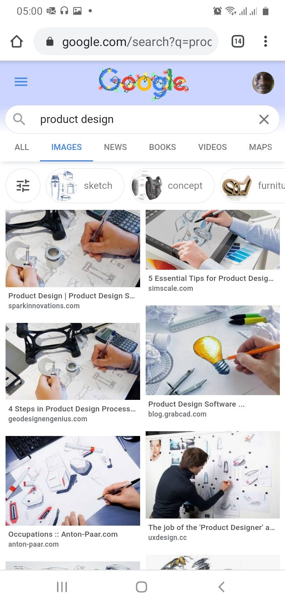

Dec 16, 2020
This linchpin product marketing Designer
You had this great idea and you did your best to build it and converted it into this beautiful product that you love and now you want to sell it to the world but do you have this product marketing designer who knows how ideas and product spread around the world. If your product sells in the real world you probably can have a chance to sell a few but if you sell it in the virtual world meaning the internet you will never be able to sell it until you hire a product marketing designer. Product Marketing Designers are those who can shape and wrap an idea or product in a way that will let it travel in optic fiber and reach an audience size you still are not expecting. The linchpin product marketing designer can do this in both the real and virtual world. Real-world has natural forces like gravity that an equilibrist could fight or a right designed airplane. Guess what the virtual world also has natural forces and fundamental laws and who knows this science knows how things spread in both worlds.
Hire a product marketing designer
Or try hard to be one of us.
thank
